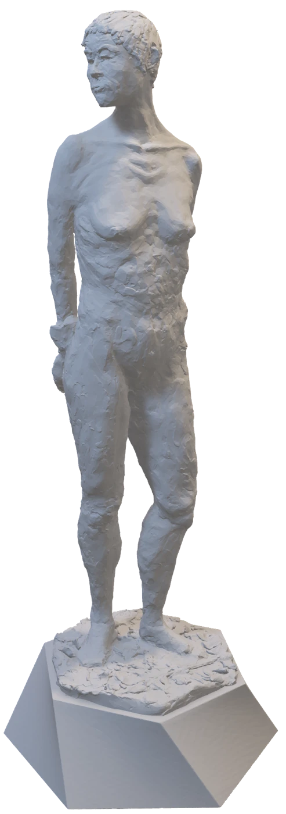
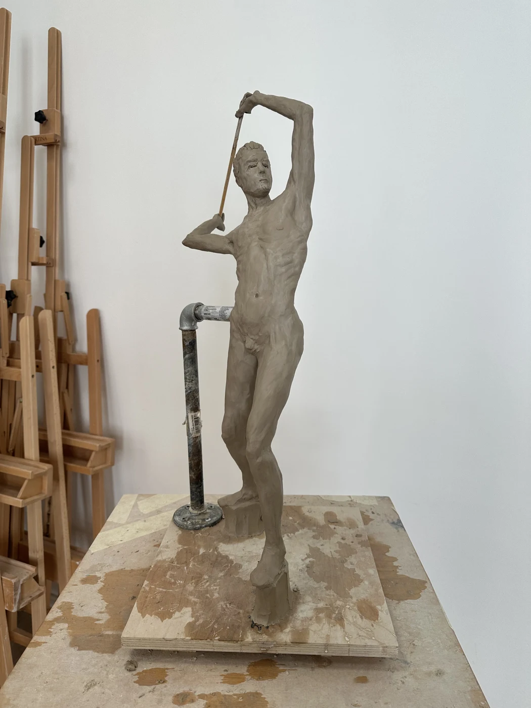

← Full portfolioFolco Soffietti / Sculpture
Thinking
in sculpture.
Making to learn and find balance. Sculpture is an ongoing exploration of material, gesture and form, with room for uncertainty and the pleasure of working by hand. A medium that can be integrated into communication when needed.
Explore the work ↓
01 / Sculpture · Material studies
A space to keep learning with my hands. Working with volume, posture and surface gives me another way to look closely, moving between observation, physical materials and digital studies.
Explore the work ↗
02 / Sculpture · Work in progress
A figure studied through weight, gesture and balance. These studio photographs record a work in progress and the physical process of building a form.
Explore the work ↗